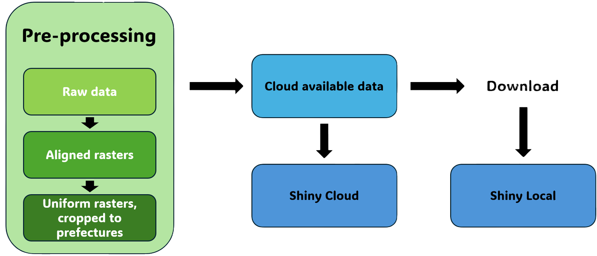
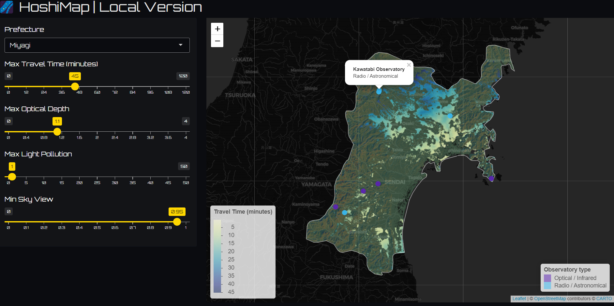

# ==============================================================================
# PACKAGES & SETUP
# ==============================================================================
if (!require("pacman")) install.packages("pacman")
pacman::p_load(terra, sf, dplyr, stringr, googledrive, ggplot2, tidyterra)
# Create output structure
base_dirs <- c("DEM", "Landuse", "Lightpollution", "Accessibility",
"OpticalDepth", "Hillshade", "Slope", "Skyview")
lapply(paste0("output/", base_dirs, "_prefectures"), dir.create, recursive = TRUE, showWarnings = FALSE)
# ==============================================================================
# DATA IMPORT & INITIAL CLEANING
# ==============================================================================
# Load Country Boundary
JP_Shp <- vect("data/JP_Shp/jp.shp")
# Load and Clean Rasters
JP_OpticalDepth <- rast("data/Aerosol_Optical_Thickness.tif")
JP_OpticalDepth[JP_OpticalDepth == -9999] <- NA
JP_OpticalDepth <- JP_OpticalDepth / 10000
JP_Accessibility <- rast("data/JP_cost/accessibility_to_cities_2015_v1.0.tif")
JP_Accessibility[JP_Accessibility == -9999] <- NA
# Combine Landuse Tiles
lu_list <- list.files("data/landuse_dataset", pattern = "\\.tif$", full.names = TRUE)
JP_Landuse <- do.call(merge, lapply(lu_list, rast))
# Load others
JP_DEM <- rast("data/JP_DEM.tif")
JP_Skyview <- rast("data/JP_Skyview.tif")
JP_Lightpollution <- rast("data/JP_Lightpollution")
# ==============================================================================
# CROP & MASK TO NATIONAL BOUNDARY
# ==============================================================================
# This standardizes the "Working Area" before splitting into prefectures
layers <- list(
DEM = JP_DEM,
Skyview = JP_Skyview,
Landuse = JP_Landuse,
Lightpollution = JP_Lightpollution,
Accessibility = JP_Accessibility,
OpticalDepth = JP_OpticalDepth
)
# Apply national crop/mask to all layers
layers <- lapply(layers, function(r) {
r_crop <- crop(r, JP_Shp)
mask(r_crop, JP_Shp)
})
# ==============================================================================
# EXCEPTION CHECK: OKINAWA DATA AVAILABILITY
# ==============================================================================
# Isolating Okinawa to check spatial overlap with our cleaned layers
okinawa_vect <- JP_Shp[JP_Shp$name == "Okinawa", ]
message("Checking data overlap for Okinawa...")
overlap_results <- lapply(names(layers), function(lyr_name) {
r <- layers[[lyr_name]]
# Check if the bounding boxes intersect
r_ext <- ext(r)
ok_ext <- ext(okinawa_vect)
intersects <- !(ok_ext$xmax < r_ext$xmin ||
ok_ext$xmin > r_ext$xmax ||
ok_ext$ymax < r_ext$ymin ||
ok_ext$ymin > r_ext$ymax)
data.frame(
Layer = lyr_name,
Status = if(intersects) "OK" else "Missing Data",
stringsAsFactors = FALSE
)
}) %>% do.call(rbind, .)
print(overlap_results)
# If any layer status is "Missing Data", the exclusion in the next loop is justified.
if(any(overlap_results$Status == "Missing Data")) {
message("Warning: Incomplete data for Okinawa detected. Proceeding with exclusion.")
}
# ==============================================================================
# PREFECTURE SPLITTING LOOP
# ==============================================================================
for(i in 1:nrow(JP_Shp)) {
pref <- JP_Shp[i,]
pref_name <- gsub("[^[:alnum:]_]", "_", pref$name[1])
# This is the line that actually performs the skip based on your check above
if(pref_name == "Okinawa") {
message("Skipping Okinawa: Data overlap issues confirmed.")
next
}
message(paste("--- Processing Prefecture:", pref_name, "---"))
# 1. Create Individual Prefecture Layers
for(lyr_name in names(layers)) {
# Crop and Mask to Prefecture
p_crop <- crop(layers[[lyr_name]], pref)
p_mask <- mask(p_crop, pref)
# Save standard layers
out_path <- paste0("output/", lyr_name, "_prefectures/", lyr_name, "_", pref_name, ".tif")
writeRaster(p_mask, out_path, overwrite = TRUE, gdal = c("COMPRESS=LZW"))
# 2. Generate Derived Terrain Layers (only if current layer is DEM)
if(lyr_name == "DEM") {
# Slope
slp <- terrain(p_mask, v = "slope", unit = "degrees")
writeRaster(slp, paste0("output/Slope_prefectures/Slope_", pref_name, ".tif"), overwrite = TRUE)
# Hillshade
asp <- terrain(p_mask, v = "aspect", unit = "radians")
slp_rad <- terrain(p_mask, v = "slope", unit = "radians")
hld <- shade(slp_rad, asp, angle = 45, direction = 315)
writeRaster(hld, paste0("output/Hillshade_prefectures/Hillshade_", pref_name, ".tif"), overwrite = TRUE)
}
}
}
# ==============================================================================
# ALIGNMENT (RESAMPLING)
# ==============================================================================
# Ensure all rasters have the exact same grid as the DEM for Shiny math
for (i in 1:nrow(JP_Shp)) {
pref_name <- gsub("[^[:alnum:]_]", "_", JP_Shp$name[i])
if(pref_name == "Okinawa") next
# Reference Raster (DEM)
ref <- rast(paste0("output/DEM_prefectures/DEM_", pref_name, ".tif"))
# Resample Continuous Data (Bilinear)
to_resample_cont <- c("Lightpollution", "Accessibility", "OpticalDepth")
for(lyr in to_resample_cont) {
path <- paste0("output/", lyr, "_prefectures/", lyr, "_", pref_name, ".tif")
if(file.exists(path)) {
r <- rast(path)
r_aligned <- resample(r, ref, method = "bilinear")
writeRaster(r_aligned, path, overwrite = TRUE, gdal = c("COMPRESS=LZW"))
}
}
# Resample Categorical Data (Nearest Neighbor)
lu_path <- paste0("output/Landuse_prefectures/Landuse_", pref_name, ".tif")
if(file.exists(lu_path)) {
r_lu <- rast(lu_path)
lu_aligned <- resample(r_lu, ref, method = "near")
writeRaster(lu_aligned, lu_path, overwrite = TRUE, gdal = c("COMPRESS=LZW"))
}
}
# ==============================================================================
# EXPORT INDIVIDUAL SHAPEFILES
# ==============================================================================
shp_sf <- st_as_sf(JP_Shp)
dir.create("output/Shapefile_prefectures", showWarnings = FALSE)
for (i in 1:nrow(shp_sf)) {
name_clean <- gsub("[^[:alnum:]_]", "_", shp_sf$name[i])
st_write(shp_sf[i, ],
paste0("output/Shapefile_prefectures/Shp_", name_clean, ".shp"),
delete_dsn = TRUE, quiet = TRUE)
}
message("All pre-processing completed successfully.")HoshiMap - Main Project
Finding the best stargazing spots throughout Japan
GitHub : https://github.com/LucasWtt/HoshiMap
Google Drive Folder : https://drive.google.com/drive/folders/1iwF9XNg6ltKaJH5gH9Hwz0whuSO3HgM7
The objective of this application is to identify and highlight the most promising places in any Japanese prefecture to conduct amateur astronomical observations. The quarto format offers a satisfying way to integrate text and code chunks, with this specific quarto being divided in three main parts. The first one describes the steps taken from data acquisition to cloud storage creation, and the second encompasses the app itself in two versions, either running on local or cloud data. Shiny has been used to run the app, and everything is written in R language and can be executed from RStudio.
General Workflow
Here is an simplified image describing the workflow followed throughout the project :

Part 1 : From raw data to cloud-available refined data
To measure the potential of the Japanese territory for stargazing, multiple factors were taken into account. Here is a quick description of the parameters present in this project and their relationship with astronomical observations. A more technical description is provided after the pre-processing code chunk.
Variables taken into account
Light pollution : Human activities have enormous impact on night time brightness. Cities and industrial operations transformed nocturnal landscape and strongly decreased the average quality of stargazing experiences. Urban-oriented environments are highly affected by light pollution, while remote places in the countryside can enjoy a much more detailed night sky. The data for this factor was collected from the Earth Observation Group, that provides a monthly Visible Infrared Imaging Radiometer Suite dataset covering the globe (Falchi et al., 2016). The one used in this version of HoshiMap is from July 2024.
Land use : Different territory occupations present opportunities or limitations in regards to astronomical observations. Terrain environments such as forests or urban cities allow for less possibilities compared to croplands or bare soil. The land use factor is used to exclude soil occupations that are not intended to be considered as potential variables. This dataset was obtained from Jaxa’s Public-health Monitor and Analysis Platform (Hashimoto et al., 2014), in collaboration with the Advanced Land Observing Satellite (ALOS) project, the data is from 2024.
Sky openness : In a country with a strong relief is less convenient than flat terrain to observe the horizon due to its active geomorphological processes, Japanese landscape is strongly impacted by this factor. Some valleys might have potential for high quality sky darkness, but have a high proportion of its sky being covered by mountainside, restricting the window of observation (Zakšek et al., 2011). Sky openness data, also called sky view factor, was calculated based on the Digital Elevation Model (DEM) of Japan, available on Google Earth Engine.
Accessibility : Accessibility models the time required for individuals to reach their most accessible city, as of 2015. It was integrated in the model to allow users to exclude remote locations from their prefecture, that are further than a chosen threshold from major towns. The data comes from the University of Twente in the Nederlands (Weiss et al., 2018).
Aerosol optical thickness : Aerosol optical thickness, or optical depth, acts as a proxy for atmospheric pollution. Aerosols floating in the air such as PM2.5 can diminish the quality of observations. While light pollution determines the background “glow” of the sky, Aerosol Optical Thickness (AOT) determines the transparency of the atmosphere itself (Levy et al., 2009). In this dataset context, it is mostly between 0 and 4 (dimensionless). In the context of HoshiMap, this variable acts as a proxy for both natural and anthropogenic atmospheric turbidity. The data was obtained through Jaxa’s Earth-Graphy and originates from the 550 nanometers band of the MODIS sensor. Similarly to light pollution, data from July 2024 was used (Siher et al., 2004).
Hillshade : Derived from the Digital Elevation Model, hillshade plays a visual role on the HoshiMap interface. It simulates the effects of the sun’s illumination on the Japanese topography. In this application, it is used as a static background layer to provide topographical context. While not a variable that determines the mathematical “suitability” of a site, it allows users to intuitively understand the terrain they are analyzing. Unlike light pollution or accessibility, hillshade is a non-modifiable factor; it serves purely to enhance the 3D perception of the map, ensuring that the final rendering is both informative and recognizable.
Altitude and Slope : Despite being less impactful than the other variables, altitude also influences the quality of stargazing. Atmospheric perturbations have a strong influence on telescope related activities. At an altitude of 1500 meters, the atmospheric pressure is only 85% of what it is at sea level. Moreover, lower atmosphere is generally turbulent due to the proximity with the ground and its vegetation. These factors can theoretically influence visibility up to 20%. This variable acts as a proxy for atmospheric stability.
Slope, even though it is highly related to altitude, has a completely different role in this field. It doesn’t have a direct relationship with the atmosphere, but with the ground itself. Steep slope environments are generally viewed as noxious for astronomy related activities, instruments such as telescopes require a relatively flat area to be used.
Pre-processing steps
Before the code itself, it is important to detail the steps that transformed the original and various datasets in a homogenous way. The first steps consisted of loading said datasets, merge tiled rasters, removing NA values, compressing rasters and creating output files. One operation could not be permormed using RStudio, being the creation of the Sky Openness raster from the DEM. While trying to run the operation, RStudio constantly crashed due to the high computational demand of the process. Instead, it was done and imported from QGIS, after 21 hours of processing. The aerosol optical depth was also divided by a factor of 10 000. This is because AOT is a unitless quantity (ratio of light intensity), and in usually expressed as a value between 1 and 4. The MODIS data followed this expression, but multiplied by the 10 000 multiplier.
After cleaning up the rasters and making sure all rasters were set to the standard WGS84 projection, they where all cropped to the national boundaries set by the japanese border shapefile, and every rasters were then aligned and standardized to the DEM resolution (27.72 meters per pixel side). Continuous datasets (optical depth, light pollution and accessibility) were resampled using a bilinear method, while the land use dataset, being discrete (14 classes) was resampled using the “nearest neighbour” method. The preprocessing code includes a chunk to find out why Okinawa (Japan offshore prefecture) displayed many processing errors. This is because some datasets originally did not include data for the distant prefecture. It was therefore decided not to include Okinawa in the project.
After setting up loops to divide each dataset in the remaining 46 prefectures, the final outputs consisted of folders, with the common typology “VaribleName_prefectures” containing each 46 rasters named “VariableName_PrefectureName.tif”. The shapefile was also divided according to prefectures. The entire output file was then manually uploaded to Google Drive. The sky openness, slope and hillshade were also created in a loop, all derived from the DEM.
Pre-processing code, from raw data to aligned rasters
Here is the code that can be used to recreate the same outputs as the ones used in HoshiMap.
Part 2 : HoshiMap, in a Fair way
Now that the data have been cleaned, the following part is composed of the explanations of the app and the two chunks of code described earlier. They are independently available on the GitHub repository linked above.
Despite their relationships with stargazing, altitude and slope have not been utilized in the version of HoshiMap released here. This is because these two variables are less vital to the subject, and limiting the number of variables taken into the computational power drastically increases the speed of rendering of HoshiMap. Slope itself appeared to be strongly correlated with sky openness, making them collinear variables. Altitude is harder to seamlessly include in the project because it is both advantageous to observation quality and a challenge for on-field accessibility. However, even though it is not included in the released app, the data for both of those parameters is available in the Google Drive Folder and can be utilized for further analysis if desired.
How to use HoshiMap
To better understand the different variables and parameters included in the Shiny, here is a description of everything that composes the app.
The UI (User Interface) is split in two parts, the settings panel, and the visualisation map. The settings panel lets the user choose any Japanese prefecture and adjust four sliders to decide what thresholds are desired to define the areas showing potential. These four options are :
Maximum travel time from major town (in minutes)
Maximum optical depth desired (from 0 to 4, dimensionless)
Maximum light pollution (in nanowatts per cm² per steradiant)
Minimum sky view coefficient (proportion of sky “open”)
As the unit of light pollution is hard to grasp without any prior knowledge, here are some key thresholds that can be used to chose what quality the user is looking for. The interval between 0 and 1 is “True Darkness” and refers to areas where human influence is extremely weak on night sky quality, usually in rural areas. From 1 to 3, the quality is still good, but specific elements such as the Milky Way start to fade out when their elevation is close to the horizon. Entering areas with light pollution going from 3 to 20 is typical of suburban environments. From 20 nW⋅cm−2⋅sr−1 onward, the quality becomes highly degraded, where only the Moon and planets can be observed reliably. Any area with a value above 50 renders any attempt at stargazing futile (Falchi et al., 2016 ; Green et al., 2022).
On top of these four sliders, the pixels associated with water bodies, forests and urban environments have been excluded from the potential areas, simply based on their nature. The different raster values associated with each land use cover have been transcribed as a list in the README file on GitHub, allowing users to modify the exclusion list (some people might want to include urban areas). The map panel of HoshiMap is dynamically updated after every slider change, while always excluding land use values chosen as unfit for observations.
The environment also includes three last elements, a semi-transparent hillshade to show landscape elevation, a filling symbology influenced by travel time to show locations with potential, and astronomical observatories associated with each prefecture. The observatories data have been fetched from NAOJ (National Astronomical Observatory of Japan) and other sporadic sources, and combined manually into a list of 64 observatories. As a prefecture is loaded, its observatories are shown on the map to allow for a comparison with potential areas. Their main observation category (optical / radar) is also indicated using a colour symbology. The obervatory points can be selected on the map to obtain more information.
Preview of Hoshimap :

HoshiMap - Cloud Version
This version of HoshiMap is designed for maximum portability and accessibility, utilizing the googledrive package to stream geospatial assets directly from a centralized repository. By authenticating via a public root ID, the application dynamically fetches rasters and shapefiles on-demand. This approach eliminates the need for users to host large datasets locally. To ensure a good user experience, the code implements a reactive caching system, ensuring that once a prefecture’s data is streamed, it remains stored in memory for instantaneous parameter adjustments and filtering.
if (!require("pacman")) install.packages("pacman")
pacman::p_load(terra, sf, leaflet, shiny, shinythemes, bslib, googledrive)
# ====================== PUBLIC DRIVE SETUP =====================
drive_deauth()
drive_root_id <- as_id("1iwF9XNg6ltKaJH5gH9Hwz0whuSO3HgM7")
# ===================== PERFORMANCE SETTINGS ====================
VIS_FACT <- 4
# ========================== FUNCTIONS ==========================
get_public_drive_file <- function(subfolder_name, file_name) {
root_content <- drive_ls(drive_root_id)
target_folder <- root_content[root_content$name == subfolder_name, ]
if(nrow(target_folder) == 0) return(NULL)
sub_content <- drive_ls(as_id(target_folder$id[1]))
target_file <- sub_content[sub_content$name == file_name, ]
if(nrow(target_file) == 0) return(NULL)
temp_path <- file.path(tempdir(), file_name)
drive_download(as_id(target_file$id[1]), path = temp_path, overwrite = TRUE)
return(temp_path)
}
load_raster_drive <- function(folder, prefix, pref) {
fname <- paste0(prefix, pref, ".tif")
path <- get_public_drive_file(folder, fname)
if (is.null(path)) stop(paste("File not found:", fname))
rast(path)
}
load_hillshade_drive <- function(folder, prefix, pref) {
fname <- paste0(prefix, pref, ".tif")
path <- get_public_drive_file(folder, fname)
if (is.null(path)) return(NULL)
rast(path)
}
load_contour_drive <- function(folder, prefix, pref) {
extensions <- c(".shp", ".shx", ".dbf", ".prj")
base_name <- paste0(prefix, pref)
local_shp_path <- ""
for (ext in extensions) {
fname <- paste0(base_name, ext)
p <- get_public_drive_file(folder, fname)
if (ext == ".shp") local_shp_path <- p
}
if (local_shp_path == "" || !file.exists(local_shp_path)) return(NULL)
st_read(local_shp_path, quiet = TRUE)
}
landuse_mask <- function(r) {
exclude <- c(1,2,6,7,8,9,11)
!(r %in% exclude)
}
# ============================ UI ===============================
ui <- fluidPage(
theme = bs_theme(
bg = "#0B0C10",
fg = "#FFFFFF",
primary = "#FFD700",
base_font = font_google("Orbitron")
),
titlePanel("🌌 HoshiMap | Cloud Version"),
sidebarLayout(
sidebarPanel(
selectInput("pref", "Prefecture", choices = NULL),
sliderInput("access", "Max Travel Time (min)", 0, 120, 45),
sliderInput("optical", "Max Optical Depth", 0, 4, 0.8, 0.1),
sliderInput("light", "Max Light Pollution", 0, 50, 20),
sliderInput("sky", "Min Sky View", 0, 1, 0.8)
),
mainPanel(leafletOutput("map", height = 700))
)
)
# ============================ SERVER ===========================
server <- function(input, output, session) {
# Populate Prefectures
observe({
acc_folder <- drive_ls(drive_root_id, pattern = "Accessibility_prefectures")
if(nrow(acc_folder) > 0) {
files <- drive_ls(as_id(acc_folder$id[1]), pattern = "\\.tif$")
prefs <- gsub("Accessibility_|\\.tif", "", files$name)
updateSelectInput(session, "pref", choices = prefs)
}
})
# Observatories Data
observatories_data <- reactive({
root_files <- drive_ls(drive_root_id)
csv_item <- root_files[root_files$name == "Observatories.csv", ]
if(nrow(csv_item) > 0) {
temp_csv <- file.path(tempdir(), "Observatories.csv")
drive_download(as_id(csv_item$id[1]), path = temp_csv, overwrite = TRUE)
df <- read.csv(temp_csv, stringsAsFactors = FALSE, fileEncoding = "UTF-8-BOM")
df$Type <- trimws(df$Type)
df <- df[!is.na(df$Longitude) & df$Longitude != "", ]
df$Longitude <- as.numeric(df$Longitude)
df$Latitude <- as.numeric(df$Latitude)
return(df)
}
return(data.frame())
})
raster_cache <- reactiveVal(list())
contour_cache <- reactiveVal(list())
get_pref_data <- function(pref) {
cache <- raster_cache()
if (!pref %in% names(cache)) {
showNotification(paste("Streaming terrain and data for", pref), type = "message")
cache[[pref]] <- list(
landuse = load_raster_drive("Landuse_prefectures", "Landuse_", pref),
access = load_raster_drive("Accessibility_prefectures", "Accessibility_", pref),
opt = load_raster_drive("OpticalDepth_prefectures", "OpticalDepth_", pref),
light = load_raster_drive("Lightpollution_prefectures", "Lightpollution_", pref),
sky = load_raster_drive("Skyview_prefectures", "Skyview_", pref),
hillshade = load_hillshade_drive("Hillshade_prefectures", "Hillshade_", pref)
)
raster_cache(cache)
}
cache[[pref]]
}
get_pref_contour <- function(pref) {
cache <- contour_cache()
if (!pref %in% names(cache)) {
cache[[pref]] <- load_contour_drive("Shapefile_prefectures", "Shp_", pref)
contour_cache(cache)
}
cache[[pref]]
}
# ========================= ANALYSIS ==========================
result_rasters <- reactive({
req(input$pref)
r <- get_pref_data(input$pref)
mask_lu <- landuse_mask(r$landuse)
valid <- mask_lu & (r$access <= input$access) & (r$opt <= input$optical) &
(r$light <= input$light) & (r$sky >= input$sky)
res <- mask(r$access, valid, maskvalues = 0)
# Process Hillshade
hill <- r$hillshade
if (!is.null(hill)) {
hill <- aggregate(hill, fact = VIS_FACT, fun = mean, na.rm = TRUE)
}
list(
result = aggregate(res, fact = VIS_FACT, fun = mean, na.rm = TRUE),
hillshade = hill
)
})
# ============================ MAP ============================
output$map <- renderLeaflet({
req(input$pref)
data_list <- result_rasters()
res_viz <- data_list$result
hill_viz <- data_list$hillshade
contour <- get_pref_contour(input$pref)
obs <- observatories_data()
obs_sub <- subset(obs, Prefecture == input$pref)
obs_types <- c("Optical / Infrared", "Radio / Astronomical")
obs_colors <- c("#5B21B6", "#38BDF8")
obs_pal <- colorFactor(palette = obs_colors, domain = obs_types, na.color = "#808080")
pal <- colorNumeric("YlGnBu", domain = values(res_viz), na.color = "transparent")
m <- leaflet() %>%
addProviderTiles("CartoDB.DarkMatter")
# Add Hillshade Overlay first (background)
if (!is.null(hill_viz)) {
m <- m %>% addRasterImage(hill_viz, opacity = 0.35, project = TRUE, colors = "Greys")
}
# Add Analysis Raster
m <- m %>% addRasterImage(res_viz, colors = pal, opacity = 0.7, project = TRUE)
# Add Boundary
if (!is.null(contour)) {
m <- m %>% addPolygons(
data = contour, color = "white", weight = 2, fillOpacity = 0
)
}
# Add Markers
if (nrow(obs_sub) > 0) {
m <- m %>% addCircleMarkers(
data = obs_sub, lng = ~Longitude, lat = ~Latitude,
color = ~obs_pal(Type), fillColor = ~obs_pal(Type),
radius = 6, fillOpacity = 0.9, stroke = TRUE, weight = 1,
popup = ~paste0("<b>", Observatory, "</b><br>", Type)
)
}
m %>%
addLegend(pal = pal, values = values(res_viz), title = "Travel Time (min)", position = "bottomleft") %>%
addLegend(
position = "bottomright",
pal = obs_pal,
values = obs_types,
title = "Observatory Type",
opacity = 1
)
})
}
shinyApp(ui, server)HoshiMap - Local Version
The Local Version of HoshiMap is optimized for speed and stability, ideal for users who have downloaded the complete “Drive” folder. By bypassing network latency, this script is significantly faster than the Cloud version. It utilizes direct file paths to access the rasters and boundary files and does not require an internet connection to function.
if (!require("pacman")) install.packages("pacman")
pacman::p_load(terra, sf, leaflet, shiny, shinythemes, bslib)
# ========================== BASE PATH ==========================
base_path <- "Drive"
# ===================== PERFORMANCE SETTINGS ====================
VIS_FACT <- 4
# ========================== FUNCTIONS ==========================
load_raster_local <- function(folder, prefix, pref) {
path <- file.path(base_path, folder, paste0(prefix, pref, ".tif"))
if (!file.exists(path)) stop(paste("Missing file:", path))
rast(path)
}
load_hillshade_local <- function(folder, prefix, pref) {
path <- file.path(base_path, folder, paste0(prefix, pref, ".tif"))
if (!file.exists(path)) return(NULL)
rast(path)
}
load_contour_local <- function(folder, prefix, pref) {
path <- file.path(base_path, folder, paste0(prefix, pref, ".shp"))
if (!file.exists(path)) return(NULL)
st_read(path, quiet = TRUE)
}
landuse_mask <- function(r) {
exclude <- c(1,2,6,7,8,9,11)
!(r %in% exclude)
}
# ============================ UI ===============================
ui <- fluidPage(
theme = bs_theme(
bg = "#0B0C10",
fg = "#FFFFFF",
primary = "#FFD700",
base_font = font_google("Orbitron")
),
titlePanel("🌌 HoshiMap | Local Version"),
sidebarLayout(
sidebarPanel(
selectInput("pref", "Prefecture", choices = NULL),
sliderInput("access", "Max Travel Time (minutes)", 0, 120, 45),
sliderInput("optical", "Max Optical Depth", 0, 4, 0.8, 0.1),
sliderInput("light", "Max Light Pollution", 0, 50, 20),
sliderInput("sky", "Min Sky View", 0, 1, 0.8)
),
mainPanel(
leafletOutput("map", height = 700)
)
)
)
# ============================ SERVER ===========================
server <- function(input, output, session) {
# ========================== PREF LIST ==========================
prefs <- gsub(
"Accessibility_|\\.tif",
"",
list.files(file.path(base_path, "Accessibility_prefectures"), pattern = "\\.tif$")
)
updateSelectInput(session, "pref", choices = prefs)
# ======================== OBSERVATORIES ========================
observatories <- read.csv(file.path(base_path, "Observatories.csv"), stringsAsFactors = FALSE)
observatories$Longitude <- as.numeric(observatories$Longitude)
observatories$Latitude <- as.numeric(observatories$Latitude)
obs_pal <- colorFactor(
palette = c("#5B21B6", "#38BDF8"),
domain = unique(observatories$Type)
)
obs_filtered <- reactive({
req(input$pref)
subset(observatories, Prefecture == input$pref)
})
# ============================= CACHE ===========================
raster_cache <- reactiveVal(list())
contour_cache <- reactiveVal(list())
get_data <- function(pref) {
cache <- raster_cache()
if (!pref %in% names(cache)) {
showNotification("Loading data...", type = "message")
cache[[pref]] <- list(
landuse = load_raster_local("Landuse_prefectures", "Landuse_", pref),
access = load_raster_local("Accessibility_prefectures", "Accessibility_", pref),
opt = load_raster_local("OpticalDepth_prefectures", "OpticalDepth_", pref),
light = load_raster_local("Lightpollution_prefectures", "Lightpollution_", pref),
sky = load_raster_local("Skyview_prefectures", "Skyview_", pref),
hillshade = load_hillshade_local("Hillshade_prefectures", "Hillshade_", pref)
)
raster_cache(cache)
}
cache[[pref]]
}
get_contour <- function(pref) {
cache <- contour_cache()
if (!pref %in% names(cache)) {
cache[[pref]] <- load_contour_local("Shapefile_prefectures", "Shp_", pref)
contour_cache(cache)
}
cache[[pref]]
}
# =========================== ANALYSIS ==========================
result_raster <- reactive({
req(input$pref)
r <- get_data(input$pref)
req(r$landuse, r$access, r$opt, r$light, r$sky)
lu_mask <- landuse_mask(r$landuse)
valid <- lu_mask &
(r$access <= input$access) &
(r$opt <= input$optical) &
(r$light <= input$light) &
(r$sky >= input$sky)
mask(r$access, valid, maskvalues = 0)
})
# ======================== VISUALIZATION ========================
viz_rasters <- reactive({
req(input$pref)
r <- get_data(input$pref)
res <- result_raster()
hill <- r$hillshade
if (!is.null(hill)) {
hill <- aggregate(hill, fact = VIS_FACT, fun = mean, na.rm = TRUE)
}
res_viz <- aggregate(res, fact = VIS_FACT, fun = mean, na.rm = TRUE)
list(
result = res_viz,
hillshade = hill
)
})
# ============================= MAP =============================
output$map <- renderLeaflet({
viz <- viz_rasters()
contour <- get_contour(input$pref)
obs <- obs_filtered()
r <- viz$result
hill <- viz$hillshade
vals <- values(r)
vals <- vals[!is.na(vals)]
pal <- colorNumeric(
"YlGnBu",
domain = vals,
na.color = "transparent"
)
m <- leaflet() %>%
addProviderTiles("CartoDB.DarkMatter")
# Hillshade
if (!is.null(hill)) {
m <- m %>%
addRasterImage(hill, opacity = 0.35, project = TRUE)
}
# Raster
m <- m %>%
addRasterImage(r, colors = pal, opacity = 0.8, project = TRUE)
# Contours
if (!is.null(contour)) {
m <- m %>%
addPolygons(
data = contour,
color = "white",
weight = 1.5,
fill = FALSE
)
}
# ========================= OBSERVATORIES =======================
if (nrow(obs) > 0) {
m <- m %>%
addCircleMarkers(
data = obs,
lng = ~Longitude,
lat = ~Latitude,
color = ~obs_pal(Type),
fillColor = ~obs_pal(Type),
fillOpacity = 0.9,
radius = 6,
stroke = TRUE,
weight = 1,
popup = ~paste0("<b>", Observatory, "</b><br>", Type)
)
}
# =========================== LEGENDS ===========================
m <- m %>%
addLegend(
pal = pal,
values = vals,
title = "Travel Time (minutes)",
position = "bottomleft"
) %>%
addLegend(
position = "bottomright",
colors = c("#5B21B6", "#38BDF8"),
labels = c("Optical / Infrared", "Radio / Astronomical"),
title = "Observatory type"
)
m
})
}
shinyApp(ui, server)References
Falchi, F., Cinzano, P., Duriscoe, D., Kyba, C. C., Elvidge, C. D., Baugh, K., … & Furgoni, R. (2016). The new world atlas of artificial night sky brightness. Science advances, 2(6), e1600377.
Green, R. F., Luginbuhl, C. B., Wainscoat, R. J., & Duriscoe, D. (2022). The growing threat of light pollution to ground-based observatories. The Astronomy and Astrophysics Review, 30(1), 1.
Hashimoto, T., et al. (2014). High-resolution land use and land cover map in Japan. JAXA Research and Development Report.
Levy, R. C., Leptoukh, G. G., Kahn, R., Zubko, V., Gopalan, A., & Remer, L. A. (2009). A critical look at deriving monthly aerosol optical depth from satellite data. IEEE Transactions on Geoscience and Remote Sensing, 47(8), 2942-2956.
Siher, E. A., et al. (2004). Relationship between optical seeing and Aerosol Optical Depth. Monthly Notices of the Royal Astronomical Society.
Weiss, D. (Corresponding Author), Nelson, A. D., Gibson, H. S., Temperley, W., Peedell, S., Lieber, A., Hancher, M., Poyart, E., Belchior, S., Fullman, N., Mappin, B., Dalrymple, U., Rozier, J., Lucas, T. C. D., Howes, R. E., Tusting, L. S., Kang, S. Y., Cameron, E., Bisanzio, D. & Battle, K. E. & 2 others, , 18 Jan 2018, In: Nature. 553, 7688, p. 333-336 4 p.
Zakšek, K., et al. (2011). Sky-View Factor as a Relief Visualization Technique. Remote Sensing.